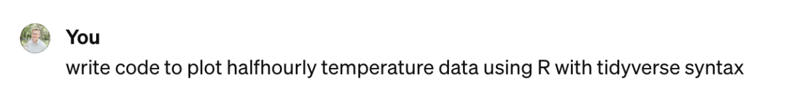
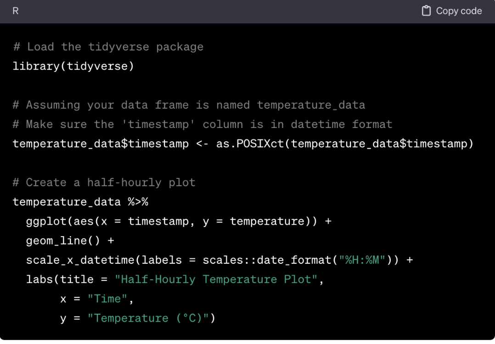
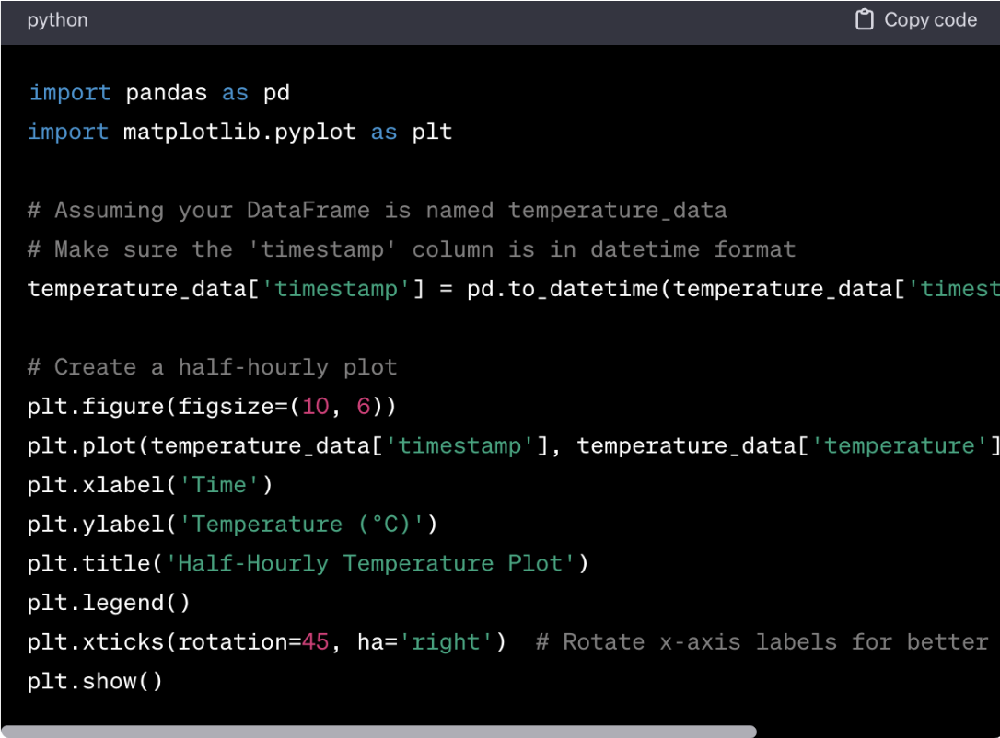
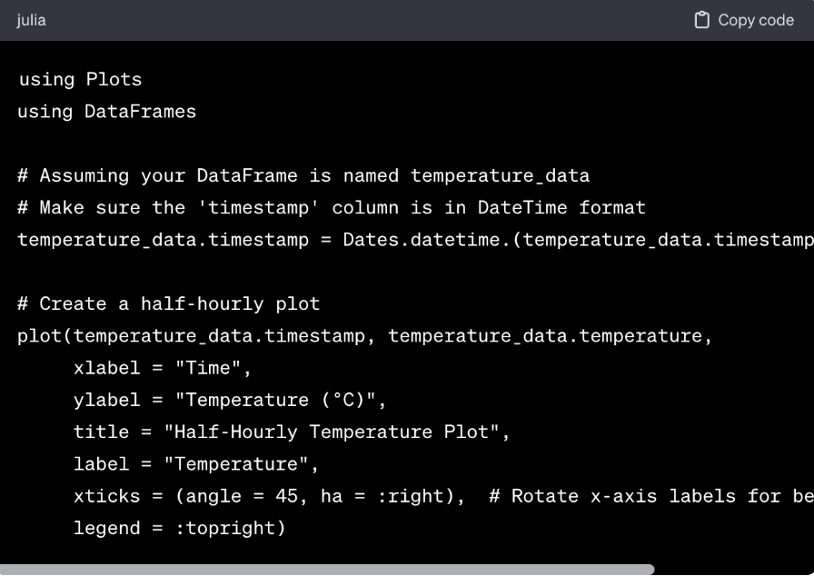

1 Environments for Data Science
You have data from an experiment, or perhaps have accessed data from an ecological network such as NEON. You are now ready to explore your data through visualization, conduct statistical tests, and perhaps increase the explanatory power beyond just the data collection itself. Your next step is to choose a computational environment for analysis. As described in the ?sec-02data, half the battle is loading in data into your computer and connecting up these datasets. A typical next step is exploratory data analysis.
This chapter provides contrasts three of the most common programming languages for data science when faced with a common task. Borrowing language from ecology, an environment for data science as an interconnected system with a particular programming language as the foundation. Just like natural environments, environments for data science differ depending on the programming language. Let’s begin.
1.1 Choosing different languages
We define an environment for data science as a programming language. Examples of programming languages include R, python, julia briefly described in ?tbl-dst-languages.
| Name | First Available | Description | Reference |
|---|---|---|---|
| R | First Available | Started as a statistical programming language. Contributed packages allow for the extension of the base language into other data science programs. | Reference |
| Python | 1991 | Started as a computer programming language that supports object oriented programmming. Similar to R, contributed modules extend the core python language to machine learning, data visualization, and other areas of science, engineering, and mathematics. | Reference |
| julia | 2012 | with the goal of combining speed and parallel language operation, essentially taking the best aspects of different programming languages and combining into one. LINK | Reference |
As data scientists we are fortunate the variety of these programming languages exist! While one programming language may be preferable in some contexts than others, we should pick the tool that is suited to gain the best insight from that for what we need in the moment.
This textbook takes a neutral approach on which language makes the most sense (admittedly both of us have our favoRites). Rather, let’s examine differences between common environmental data science languages using the power of chatGPT.
Generative AI is an offshoot of machine learning methods from data science, and so provides a good case study to examine differences environments for data science. These artificial intelligence tools (such as chatGPT and others) have rapidly transformed our daily lives (especially post 2023) and how we interact with the internet. For scientific research, disclosing the use of generative AI tools is recognized as maintaining scientific integrity (Bockting et al. 2023; “Best Practices for Generative AI in Research AJE” n.d.; Bertolo and Antonelli 2024). Let’s use them here to contrast how the different environments in ?tbl-dst-languages produce output.
If we chose R, a prompt to chatGPT might be the following Figure 1.1:

Figure 1.2 shows its response, which (admittedly) a well-organized (and documented!) explanation of starter code:

The provided code loads up the correct library (tidyverse), converts the time to the POSIXct format (which makes working with dates and times easier) and generates a well-labeled plot. Not too shabby. We would also award extra credit points for using the tidyverse pipe (%>%) in the code, but perhaps not full credit because of the adoption of the base R pipe (|>).
Now let’s give the same prompt with python (?fig-chatgpt-python):
 Examining the code seems like a beat for beat rehash of the same code with R, but with just python (almost like Star Wars: The Force Awakens, but don’t @ us!). There are some differences to note:
- Similar to R, in python libraries are defined at the start of the code (with import). However, those libraries need to be referred to when you wish to use a command from a particular library (e.g. the function to_datetime is a function in the pandas library). Thankfully in python you can abbreviate the names as pd - whichever makes sense for you. (NOTE: In R if you only want to use a particular function in a library, then refer to it with the double colon (::, e.g. PACKAGE::FUNCTION) ).
- Python doesn’t have the native pipe operator (|>) like R. The assignment operator is equals (=) versus a left facing arrow (<—).
We finally asked julia, a newer language that is faster to do the same as we did with R and python:

Can you spot the differences (and similarities) with the Julia output in Figure 1.3 compared to R (Figure 1.2) or Python (?fig-chatgpt-python)? For all practical purposes, it comes down to preference - which one you are more familiar with.
So which should you choose? R is good for statistics and data manipulation. There is a strong user base in ecology (point to references). At the same time, the tidyverse language (and associated packages; (wickhamWelcomeTidyverse2019?)) have been developed over the past decade with several well-supported items. It is not hard to find instances of how to do something in R using tidyverse with an ecological bent (link to the NEON webpages as well).
The same case could be made for Python - which at its core is a programming language (R was initially designed for statistical analysis which has morphed into wider applications for data science). If you are familiar with C or C++, Python may feel very familiar to you.
julia is a very promising language with a user base growing in biology (Roesch et al. 2023). We believe there is longevity in this language, although it has a smaller user community in the environmental sciences.
A non open-source alternative to programming is MATLAB, which for the authors was the first foray into programming languages in graduate school. This software is used in engineering and industrial applications. Because it is a commercial and proprietary language, it is not as translatable for open science applications. An open source alternative (Octave) is also available, but it doesn’t have as much usable features that one might find in MATLAB.
1.2 Our recommendations
We believe that the best position to take is one of openness to learning new tools and software as your needs will invariably evolve. It is okay to dabble! John started out using Matlab, but transitioned to Octave because of the open-source capabilities, but it was hard to support sustained research projects. Making a clean break to work with R (at the same time as the tidyverse was growing in use) provided a fresh start to learn new tools and techniques for managing data.
Naupaka learned C++ in high school, then didn’t program much until grad school, where I learned perl in a genomics course. When I started analyzing my own microbial community ecology data for my dissertation, I needed the statistical tools only available in R so started teaching myself. Then along the way I taught myself SQL, bash, python, and a little bit of lisp.
1.3 The future: why choose?
The future of siloing yourself in an particular programming language is becoming less relevant with the proliferation of online tools such as quarto, jupyter notebooks, and google colab. (Provide links). These alternatives borrow strengths from each language, allowing you to seamlessly integrate them all together. Although the nuances between languages will always be a challenge (especially if you do the code switching between them!), this seems like a promising future development.